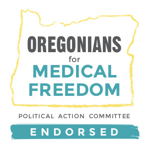

Rolf Schuler for Oregon House District 44
Are you better off now than you were two years ago?
Is the world safer now than it was two years ago?
I’m running for Oregon State Representative, House District 44, and I need your vote in November.
Who am I? I’m your neighbor. Born and raised in N Portland (Overlook), I’ve lived other places around the globe but moved back to Portland in 2008 to care for my elderly parents. Having graduated from Oregon State University with a degree in Journalism, I know the difference between news, editorial, and propaganda. I’ve been overseas doing humanitarian work, including three years in former Soviet Central Asia. I can tell you from first-hand experience, little good comes from Socialism. I worked for 14 years in I.T. for a large international non-profit. More recently, COVID related issues cost me a good job that I was enjoying. I am now a school bus driver for students with special needs. I enjoy interacting with the parents and teachers who love these children. As a working-class citizen, I too am feeling the pinch of inflation and high taxation.
I am a grass-roots candidate, refusing campaign contributions from special interests with deep pockets. Every time you see a candidate with lots of advertising, you need to ask yourself: What special interest is so eager to have this candidate elected that they will spend thousands of dollars to get them elected? If elected, I will work for you, the people.
Why am I running? I am running to give you a choice in November. Career politicians supported by special interests are doing everything they can to grab more power for themselves and the special interest they are beholden to.These actions clearly hold the citizens who elected them in contempt. The result is higher taxes, higher prices for everything, increased homelessness, streets that are no longer safe... I am not a politician, I’m just a citizen who wants to see an end to the reckless nonsense and blatant disregard for the rule of law that is taking place in Salem.
The Issues
Education
- Parents, not schools, not government, are responsible for the upbringing of children. No one loves your child like you do!
- Publicly funded curriculum should be transparent and readily available for public review. Lesson plans should be available to parents upon request. No secrets. No red tape.
- With the exception of criminal neglect or abuse, school nurses, counselors, and other staff should not insert themselves between parents and their children.
- Parents should be free to peacefully object at School Board meetings without fear of being labeled a “domestic terrorist” or other retribution.
- Parent involvement in their child’s education should be encouraged.
- School Choice! End the public school monopoly. Allow vouchers for private schools and tax credit for home school.
- Student data must be carefully protected. It should be fully transparent to parents, yet remain confidential and under local control. It should never be sold or otherwise available to non-essential third-parties without express consent of the parent. Student data should never be used for any kind of “social score,” consumer profiling or marketing.
Homelessness
- A Hand Up, not a Hand Out. Offer help to those who want to get back on their feet. Stop current policies that enable and promote homelessness, creating an endless dependency on your tax dollars.
- Enable Non-Government Organizations (NGO’s), rather than bolster bureaucracies. The primary objective of most government bureaucracies is to justify their own existence. Consequently, many bureaucracies exasperate the issue they were created to solve, causing the population they intend to help to become dependent on their “services” while demanding more tax revenue. NGO’s are typically far more effective at helping people out of their dependencies. With respect to addressing social issues, Government’s role should be to facilitate NGO’s with as few strings attached as possible.
- Affordable housing shouldn’t require government programs. Rather, inflation, high interest rates, and excessive taxation need to be brought under control. Home ownership should be in reach of working-class citizens. NGO’s can be utilized to provide transitional housing for those who are trying to get back on their feet.
Taxes
- During this season of unprecedented inflation, we need to lower the tax burden rather than increase it.
- No New Taxes or “Revenue Enhancements” - including Tolls - without voter approval.
- Repeal 2013 SB810 - the per-mile tax, as it was created without voter approval. Per-mile tax requires excessive and invasive government data collection. Gas tax revenue lost to Electric Vehicles (EV’s) can be made up with an EV charging station tax which doesn’t require invasive data collection and would be comparable to existing gas taxes.
- Repeal the gross receipts tax. This tax threatens many businesses that operate on thin profit margins, such as independent farms and nursing homes. Taxing gross receipts is simply wrong.
Health Care
- Improve medical access. Oregon has a shortage of medical doctors, especially in rural areas. Compared to many states, low Medicaid reimbursements, coupled with a high cost of living, make Oregon an unattractive place for general practitioners. Let’s create tax incentives to off-set the high cost of living and bring more doctors to Oregon. This can happen at both the state and county levels.
- Let doctors practice medicine without interference from politically motivated state or federal bureaucrats.
- No mandates. These usurp patient-doctor relationships with tyrannical, impersonal bureaucratic overreach.
- No more lockdowns. They are ineffective and cause more harm than good.
Constitution
“Where the people fear the government you have tyranny. Where the government fears the people you have liberty.” — John Basil Barnhill, 1914
- Protect the First Amendment - freedom of the press - without government censorship.
- Protect the right to peacefully protest. Riots and looting are not peaceful protests, and persons who engage in such should be prosecuted.
- Protect the Second Amendment right to bear arms. Statistics show that areas with the most restrictive gun-laws have the highest violent crime rates, while areas with more permissive gun laws are safer.
Election Integrity
Voting is the right of eligible citizens. All rights have responsibilities, and no right should be forced onto a citizen who does not wish to own the responsibility. Gun ownership is also a right. But it would be reckless to force that right onto citizens who don’t want to own that responsibility. While eligible citizens should always be encouraged to participate in our electoral process, care must be taken to minimize opportunity for voter fraud. With this in mind...
- Keep the voter rolls clean. Voters who are inactive for two or more years should automatically be purged from the voter rolls.
- End automatic voter registration at the DMV. Voter registration should always be a deliberate choice and require documentation to demonstrate eligibility. When a voter becomes registered, the registering agency should make a reasonable effort to ensure that any prior registration is purged to avoid multiple registrations.
- End automatic vote-by-mail and return to brick-n-mortar poling places - with paper ballots. It’s a great way to meet your neighbors! Mail-in ballots should be available upon request only. No accommodation should be made for late mail-in ballots, as this is an invitation for fraud. Electronic voting machines should be prohibited, as they are easy to manipulate and difficult to audit.
- Run-off elections should be required when no candidate receives greater than 50% of the vote in a contested race.
Thank you for your vote. I can’t do this without you, but together we can return sanity to Salem.
Paid for by: Friends of Rolf Schuler • PO Box 17444 • Portland OR 97217
